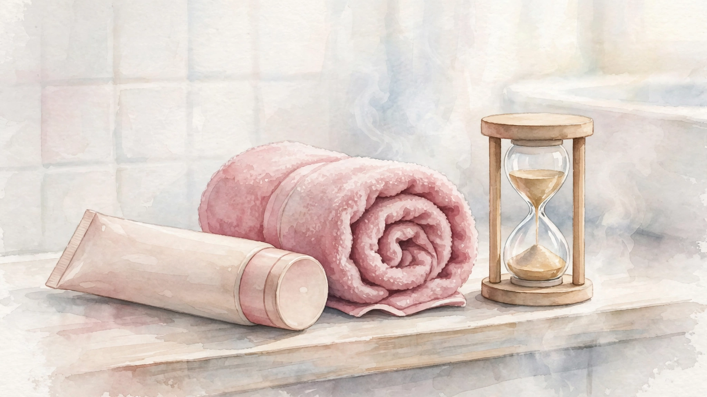
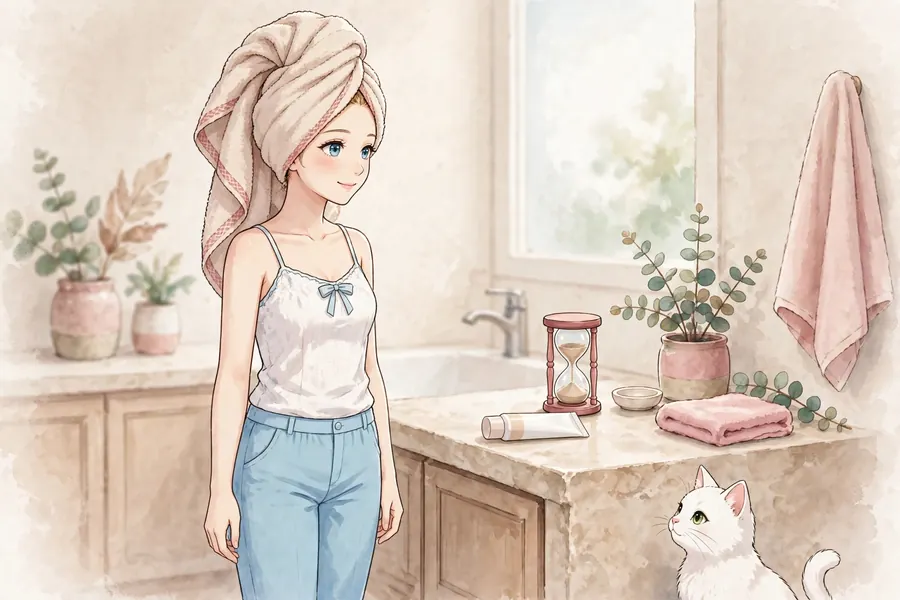

トリートメントの置く時間と流し方

トリートメントは「つけて、置いて、流す」の3つの段階があります。施術の現場でも、この置く時間と流し加減で、仕上がりの手触りが変わることを日々感じています。この記事では、それぞれの段階の考え方を整理します。
置く時間は、商品の案内が基本
置く時間の目安は、商品ごとに案内が異なります。「数分置く」「置かずに流す」など、設計によってさまざまです。まず確認したいのは、自分の使っている商品の案内です。時間を長く置けばよい、という単純な話ではなく、案内の時間はその商品の設計を前提に決められています。
置いている時間の使い方も工夫できます。その間に身体を洗う、湯船につかるなど、入浴の流れの中に組み込むと、待ち時間が無駄になりません。私は施術の合間の時間の使い方と同じで、「待つ時間も手順の一部」と考えるようにしています。
つける場所は、毛先から
トリートメントは、頭皮ではなく髪、とりわけ毛先を中心につけるのが基本です。毛先は髪の中でも古い部分で、乾燥や絡まりを感じやすい場所です。根元からたっぷりつけると、頭皮に残りやすくなり、すすぎにも時間がかかります。
つける順番は、毛先→中間→表面の順が扱いやすいと感じています。手のひらに広げてから、毛束を包むようになじませると、むらが減ります。
流し加減は「指の感触」で確かめる
流し加減は、好みと商品の設計で変わります。現場での確かめ方は、流しながら指で毛束を触り、ぬるつきがどの程度残っているかを確認することです。完全に落とし切る前に止めるのか、さっぱり流すのかは、商品の案内に沿うのが基本です。
耳の後ろや襟足は、トリートメントが残りやすい場所です。最後にその部分を重点的に流すと、仕上がりが安定します。置く、つける、流す。この3段階を意識するだけで、いつものトリートメントの時間が少し丁寧になります。
なお、洗い流さないタイプ（アウトバス）のトリートメントは、この記事の「置く・流す」とは別の使い方です。ドライヤーの前に使うものが多く、量の目安も商品ごとに案内があります。洗い流すタイプと洗い流さないタイプを併用する場合は、それぞれの量を控えめにするところから始めると、重くなりすぎずに調整できます。タイプの違いを意識して使い分けることが、トリートメント選びの基本です。
家族と入浴の時間が重なる日は、置く時間を確保しにくいこともあります。そういう日は、置く時間を短めにする日と割り切るなど、生活に合わせた調整で構いません。手順は、生活に合わせて変えるものです。

セラフィナ「流し加減は、指で触って確かめるのが現場のやり方だよ」

セラフィナ｜美容の道具箱の案内役
「量と表示が分かれば、美容は失敗しない。」——セラフィナと白猫のモコが、買う前のチェックポイントを案内します。綺麗になりたい気持ちに正直に、でも表示は冷静に読むのが、このサイトの約束です。